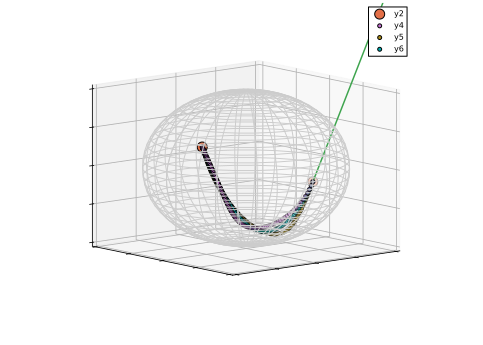

Cubic Hermite interpolation on manifolds
Mateusz Baran 2024-05-09
Introduction
This example shows how to perform cubic Hermite interpolation on Riemannian manifolds. The idea is described in [Zim20].
First, let’s import necessary libraries.
using Manifolds, ManifoldDiff, Plots
using ManifoldDiff: differential_log_argument
pythonplot() CondaPkg Found dependencies: /home/runner/.julia/packages/PythonCall/Nr75f/CondaPkg.toml
CondaPkg Found dependencies: /home/runner/work/ManifoldExamples.jl/ManifoldExamples.jl/CondaPkg.toml
CondaPkg Found dependencies: /home/runner/.julia/packages/PythonPlot/469aA/CondaPkg.toml
CondaPkg Dependencies already up to date
┌ Warning: KeyError("DISPLAY")
└ @ PythonPlot ~/.julia/packages/PythonPlot/469aA/src/init.jl:127
Plots.PythonPlotBackend()The main interpolation function directly follows Eq (2.5) from [Zim20].
function manifold_hermite_interpolation(
M::AbstractManifold,
p,
q,
Xp,
Xq,
t::Real,
)
Y_qp = log(M, q, p)
Xp_to_q = differential_log_argument(M, q, p, Xp)
a0t = 2*t^3 - 3*t^2 + 1 # simplified (A.1)
b0t = t^3 - 2*t^2 + t # simplified (A.3)
b1t = t^3 - t^2 # simplified (A.4)
return exp(M, q, a0t .* Y_qp .+ b0t .* Xp_to_q .+ b1t .* Xq)
endmanifold_hermite_interpolation (generic function with 1 method)We can now plot the interpolating line between two points on a sphere ($p$ and $q$) with tangent vectors $X_p$ and $X_q$. The curve $c\colon [0, 1] \to \mathbb{S}^2$ defined by manifold_hermite_interpolation now has the following interpolation properties:
- $c(0) = p$
- $c(1) = q$
- $\dot{c}(0) = X_p$
- $\dot{c}(1) = X_q$
- In the Euclidean case, the
manifold_hermite_interpolationconicides with cubic Hermite interpolation.
M = Sphere(2)
p = [0.8266841314682074, 0.3288540904434144, 0.45656142410117206]
Xp = [0.15493539779687937, 0.5824002702016382, -0.7000314284584177]
q = [0.0, 1.0, 0.0]
Xq = [-2, 0.0, 5]
scene = plot(M, [p, q]; wireframe_color=colorant"#CCCCCC", markersize=10, camera=(140.0, 10.0))
plot!(scene, M, [p, q], [Xp, Xq]; wireframe = false, linewidth=1.5)
interp_line = [manifold_hermite_interpolation(M, p, q, Xp, Xq, t) for t in 0.0:0.01:1.0]
plot!(scene, M, interp_line; wireframe = false, linewidth=1.5)sys:1: UserWarning: No data for colormapping provided via 'c'. Parameters 'vmin', 'vmax' will be ignored
sys:1: UserWarning: No data for colormapping provided via 'c'. Parameters 'vmin', 'vmax' will be ignored
sys:1: UserWarning: No data for colormapping provided via 'c'. Parameters 'vmin', 'vmax' will be ignored
sys:1: UserWarning: No data for colormapping provided via 'c'. Parameters 'vmin', 'vmax' will be ignoredNow, let’s add interpolating curve with reversed start and end, and reflected tangent vectors. Note that for, contrary to the Eulidean case, the order of points does matter for cubic interpolation on a sphere.
scene = plot(M, [p, q]; wireframe_color=colorant"#CCCCCC", markersize=10, camera=(140.0, 10.0))
plot!(scene, M, [p, q], [Xp, Xq]; wireframe = false, linewidth=1.5)
plot!(scene, M, interp_line; wireframe = false, linewidth=1.5)
interp_line2 = [manifold_hermite_interpolation(M, q, p, -Xq, -Xp, t) for t in 0.0:0.01:1.0]
plot!(scene, M, interp_line2; wireframe = false, linewidth=1.5)sys:1: UserWarning: No data for colormapping provided via 'c'. Parameters 'vmin', 'vmax' will be ignored
sys:1: UserWarning: No data for colormapping provided via 'c'. Parameters 'vmin', 'vmax' will be ignored
sys:1: UserWarning: No data for colormapping provided via 'c'. Parameters 'vmin', 'vmax' will be ignored
sys:1: UserWarning: No data for colormapping provided via 'c'. Parameters 'vmin', 'vmax' will be ignoredOne possible way of making an interpolation method that is independent of the order of points in computing the average between these two interplations (see manifold_hermite_interpolation_symmetric below).
function manifold_hermite_interpolation_symmetric(
M::AbstractManifold,
p,
q,
Xp,
Xq,
t::Real,
)
r_pq = manifold_hermite_interpolation(M, p, q, Xp, Xq, t)
r_qp = manifold_hermite_interpolation(M, q, p, -Xq, -Xp, 1-t)
return mid_point(M, r_pq, r_qp)
end
scene = plot(M, [p, q]; wireframe_color=colorant"#CCCCCC", markersize=10, camera=(140.0, 10.0))
plot!(scene, M, [p, q], [Xp, Xq]; wireframe = false, linewidth=1.5)
plot!(scene, M, interp_line; wireframe = false, linewidth=1.5)
plot!(scene, M, interp_line2; wireframe = false, linewidth=1.5)
interp_line3 = [manifold_hermite_interpolation_symmetric(M, q, p, -Xq, -Xp, t) for t in 0.0:0.01:1.0]
plot!(scene, M, interp_line3; wireframe = false, linewidth=1.5)
sys:1: UserWarning: No data for colormapping provided via 'c'. Parameters 'vmin', 'vmax' will be ignored
sys:1: UserWarning: No data for colormapping provided via 'c'. Parameters 'vmin', 'vmax' will be ignored
sys:1: UserWarning: No data for colormapping provided via 'c'. Parameters 'vmin', 'vmax' will be ignored
sys:1: UserWarning: No data for colormapping provided via 'c'. Parameters 'vmin', 'vmax' will be ignoredLiterature
- [Zim20]
- R. Zimmermann. Hermite Interpolation and Data Processing Errors on Riemannian Matrix Manifolds. SIAM Journal on Scientific Computing 42, A2593–A2619 (2020). Publisher: Society for Industrial and Applied Mathematics.